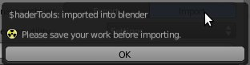
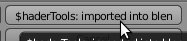

| Import : |
| This button allows import into your scene a material previously exported. |
| Click 'Import' button into user interface : |
| If an error appears please you must save your work before importing a material : |
|  |
| A window should appear. You must access to the directory contain the material to import (*.blex), then select him : |

|
| Finally click on button 'Import' in top right corner or double-click on selected material inside the list : |
|  |
| Now the material should be appear into materials list : |

|